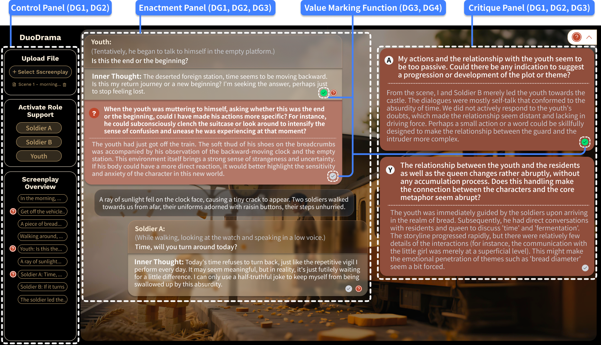
DuoDrama: Supporting Screenplay Refinement Through LLM-Assisted Human Reflection
Yuying Tang, Xinyi Chen, Haotian Li, Xing Xie, Xiaojuan Ma, Huamin Qu
View paper ↗Hello, I am Yuying Tang, a visiting Ph.D. student at Imperial College London and the University of the Arts London, where I collaborate with Professor Sebastian Deterding and Professor Rebecca Fiebrink. I am also a Ph.D. candidate at The Hong Kong University of Science and Technology (HKUST), advised by Professor Huamin Qu and Associate Professor Xiaojuan Ma. Prior to joining HKUST, I worked with Professor Antti Oulasvirta at Aalto University in Finland.
My research focuses on Human–Computer Interaction and Human–AI Interaction for creativity and storytelling.
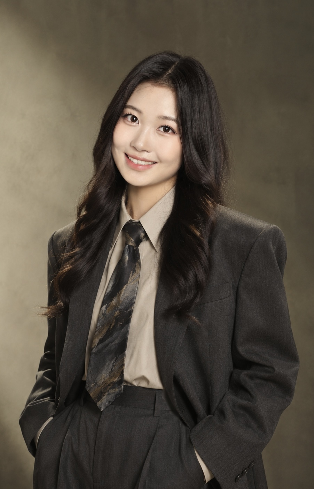
Organized and presented the course AI for Creative Visual Content Generation, Editing, and Understanding at SIGGRAPH 2026 in Los Angeles, USA.
Presented a new poster at Creativity & Cognition 2026 in London, UK.
Served as a reviewer for UIST 2026 and the International Journal of Human–Computer Interaction.
Presented two new papers at CHI 2026 in Barcelona, Spain.
Served as a reviewer for DIS 2026 and Creativity & Cognition 2026.
Volunteered at SIGGRAPH Asia 2025 in Hong Kong SAR.
Served as a reviewer for CHI 2026 and the International Journal of Human–Computer Interaction.
Participated in UIST 2025 in Busan, South Korea.
Served as a reviewer for NeurIPS Creative AI Track 2025.
Participated in SIGGRAPH 2025 in Vancouver, Canada.
AI film The Mirror received an Honorable Mention at the HKUST AI Film Festival, was screened at the event, covered by more than 200 media outlets globally, and featured in an interview with i-CABLE News.
Presented a new paper at CHI 2025 in Yokohama, Japan.
Served as an Associate Chair at CHI LBW 2025.
Served as a reviewer for CSCW 2025.
Human–AI co-creation · storytelling · design

Yuying Tang, Xinyi Chen, Haotian Li, Xing Xie, Xiaojuan Ma, Huamin Qu
View paper ↗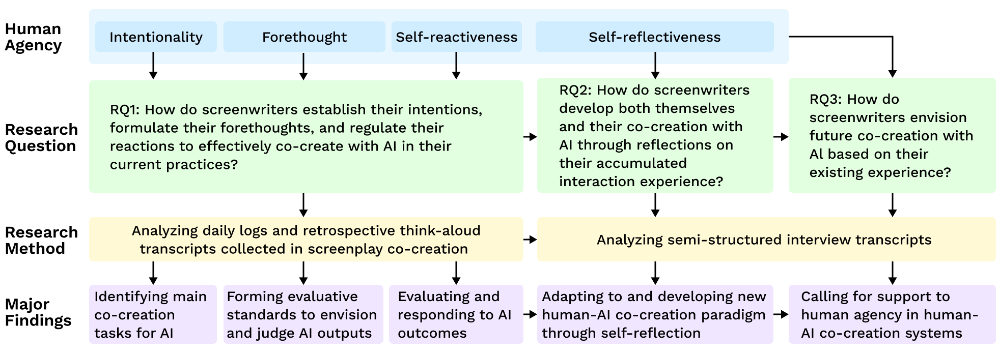
Yuying Tang, Jiayi Zhou, Haotian Li, Xing Xie, Xiaojuan Ma, Huamin Qu
View paper ↗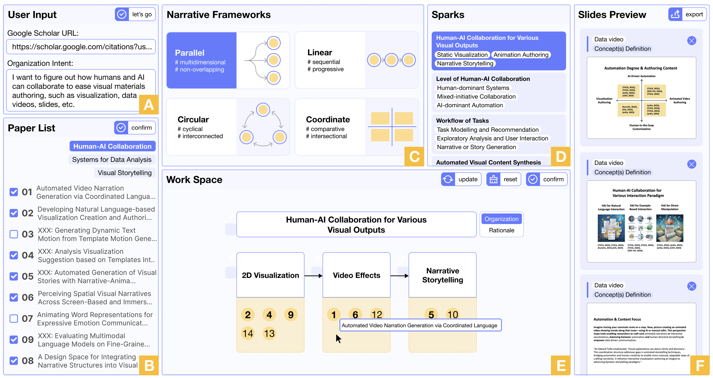
Runhua Zhang, Yang Ouyang, Leixian Shen, Yuying Tang, Xiaojuan Ma, Huamin Qu, Xian Xu
View paper ↗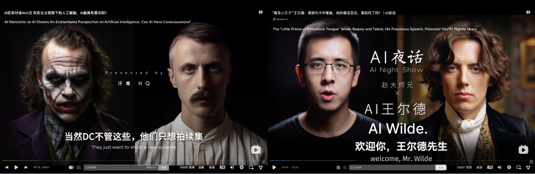
Yuying Tang, Wenqi Qiu, Yu Zhang, Baiqiao Zhang, Wenshuo Zhang, Xiaojuan Ma, Huamin Qu
View paper ↗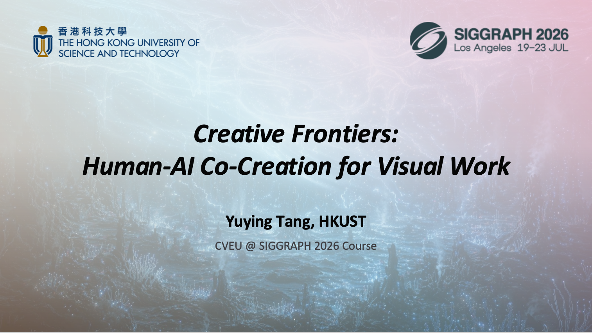
Zheng Wei, Yuying Tang, Mia Tang, Anyi Rao
View paper ↗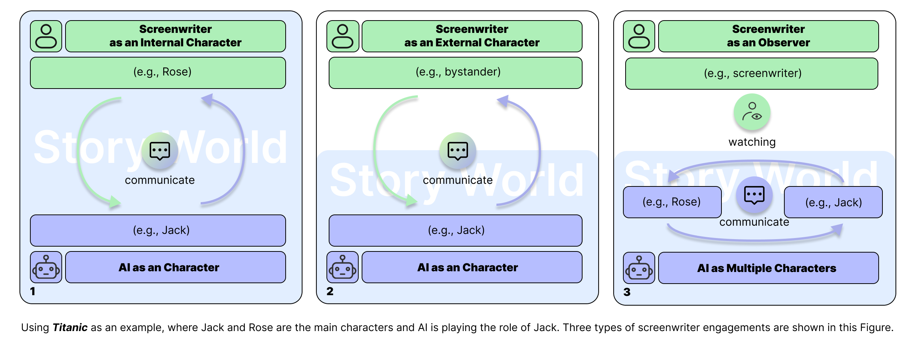
Yuying Tang, Haotian Li, Minghe Lan, Xiaojuan Ma, Huamin Qu
View paper ↗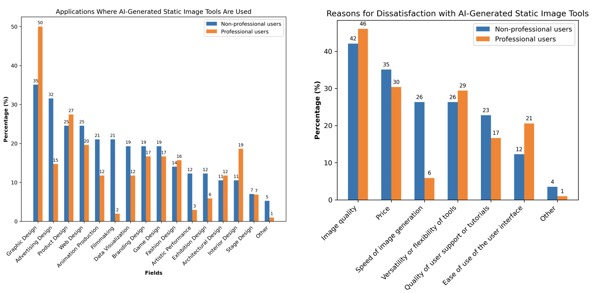
Yuying Tang, Ningning Zhang, Mariana Ciancia, Zhigang Wang
View paper ↗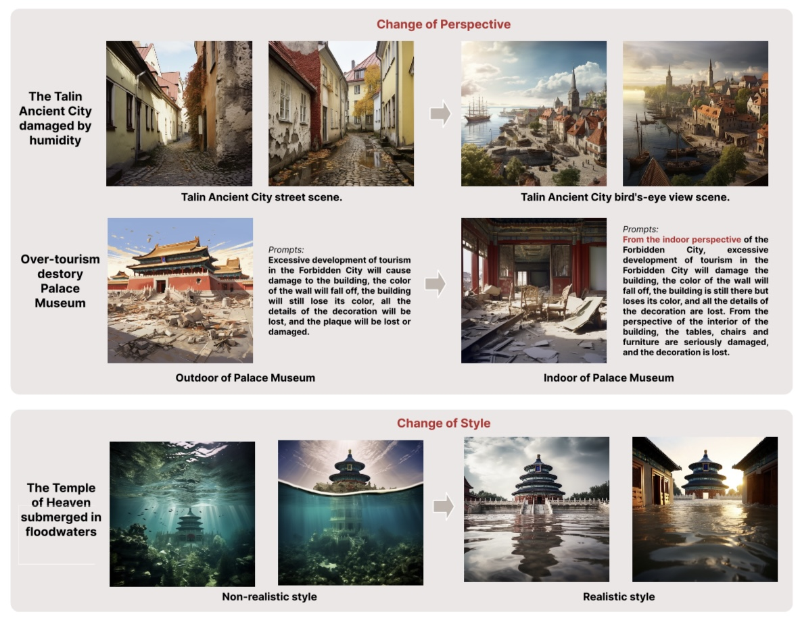
Kexue Fu, Ruishan Wu, Yuying Tang, Yixin Chen, Bowen Liu, RAY LC
View paper ↗
Yuying Tang, Yuqian Sun, Ze Gao, Zhijun Pan, Zhigang Wang, Tristan Braud, Chang Hee Lee, Ali Asadipour
View paper ↗
Yuqian Sun, Yuying Tang (Co-first author), Ze Gao, Zhijun Pan, et al.
View paper ↗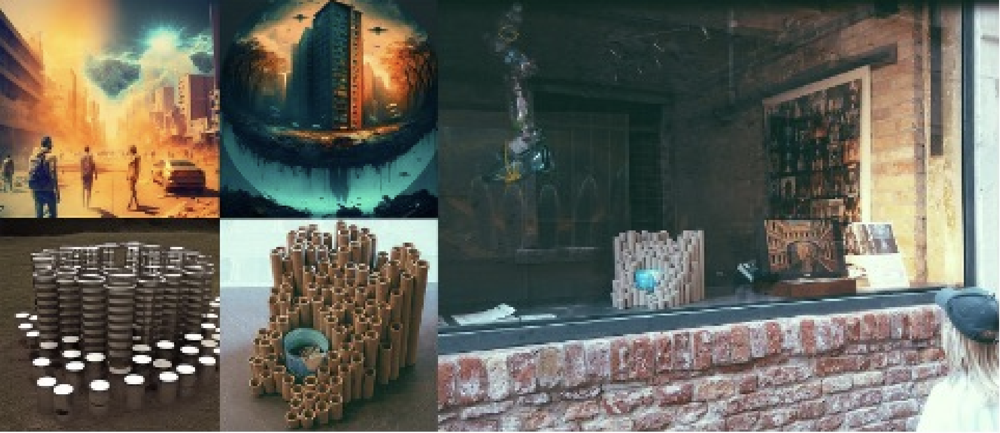
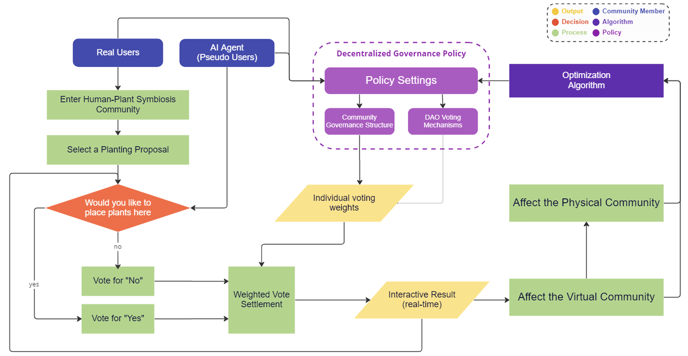
Yan Xiang, Qianhui Fan, Kejiang Qian, Jiajie Li, Yuying Tang, Ze Gao
View paper ↗Hong Kong University of Science and Technology · Individualized Interdisciplinary Program · HKPFS
Supervisors: Professor Huamin Qu and Associate Professor Xiaojuan Ma
Imperial College London · Dyson School of Design Engineering
Supervisor: Professor Sebastian Deterding
University of the Arts London · Creative Computing Institute
Supervisor: Professor Rebecca Fiebrink
Politecnico di Milano · Communication Design · Double Degree
Supervisor: Dr. Mariana Ciancia
Tsinghua University · Academy of Art and Design · Visual and Information Design
Supervisor: Professor Zhigang Wang
Central Academy of Fine Arts · Film and Television Photography and Production
Research Assistant · AI-Assisted Conversational Color Design
Supervisors: Professor Antti Oulasvirta and PhD Candidate Lena Hegemann
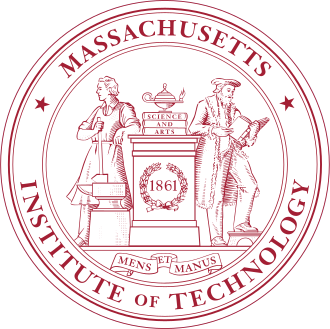
Research Assistant · City Science Lab @ Shanghai · SoCity Web3.0 DAO and Green Commute
Research Assistant · Artificial Intelligence Automatic Editing of Videos
Supervisor: Professor Lingyun Sun
Invited by Dr. Yanjun Lyu
Invited by Dr. Haotian Li
Invited by Professor Ke Xu
Invited by Professor Dakuo Wang
Invited by Professor Anyi Rao